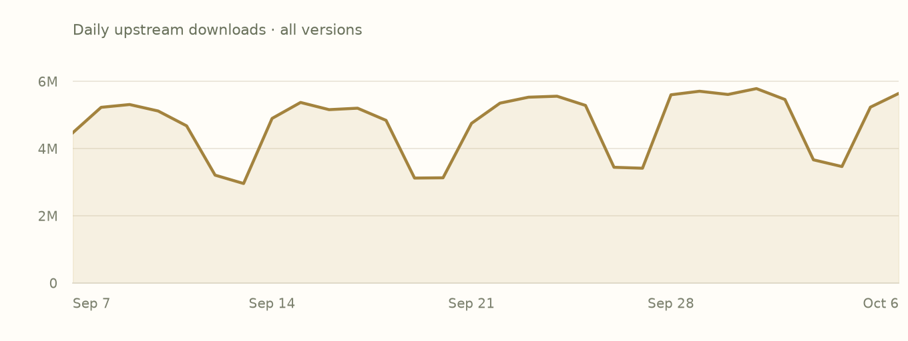
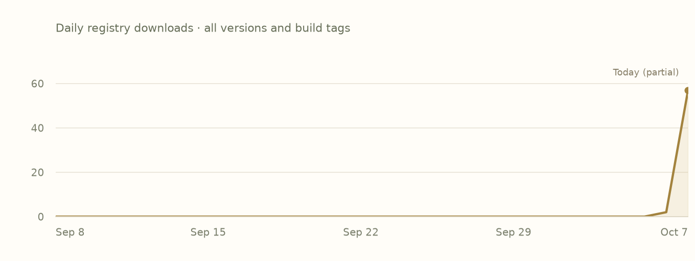

README
Recorded documentationUpstream documentation. Cargo examples describe the Rust crate; Add to project provides the Oven dependency.
README.md · Author-provided
memchr
This library provides heavily optimized routines for string search primitives.
Dual-licensed under MIT or the UNLICENSE.
Documentation
Overview
- The top-level module provides routines for searching for 1, 2 or 3 bytes in the forward or reverse direction. When searching for more than one byte, positions are considered a match if the byte at that position matches any of the bytes.
- The
memmemsub-module provides forward and reverse substring search routines.
In all such cases, routines operate on &[u8] without regard to encoding. This
is exactly what you want when searching either UTF-8 or arbitrary bytes.
Compiling without the standard library
memchr links to the standard library by default, but you can disable the
std feature if you want to use it in a #![no_std] crate:
[dependencies]
memchr = { version = "2", default-features = false }
On x86_64 platforms, when the std feature is disabled, the SSE2 accelerated
implementations will be used. When std is enabled, AVX2 accelerated
implementations will be used if the CPU is determined to support it at runtime.
SIMD accelerated routines are also available on the wasm32 and aarch64
targets. The std feature is not required to use them.
When a SIMD version is not available, then this crate falls back to SWAR techniques.
Minimum Rust version policy
This crate's minimum supported rustc version is 1.61.0.
The current policy is that the minimum Rust version required to use this crate
can be increased in minor version updates. For example, if crate 1.0 requires
Rust 1.20.0, then crate 1.0.z for all values of z will also require Rust
1.20.0 or newer. However, crate 1.y for y > 0 may require a newer minimum
version of Rust.
In general, this crate will be conservative with respect to the minimum supported version of Rust.
Testing strategy
Given the complexity of the code in this crate, along with the pervasive use
of unsafe, this crate has an extensive testing strategy. It combines multiple
approaches:
- Hand-written tests.
- Exhaustive-style testing meant to exercise all possible branching and offset calculations.
- Property based testing through
quickcheck. - Fuzz testing through
cargo fuzz. - A huge suite of benchmarks that are also run as tests. Benchmarks always confirm that the expected result occurs.
Improvements to the testing infrastructure are very welcome.
Algorithms used
At time of writing, this crate's implementation of substring search actually has a few different algorithms to choose from depending on the situation.
- For very small haystacks, Rabin-Karp is used to reduce latency. Rabin-Karp has very small overhead and can often complete before other searchers have even been constructed.
- For small needles, a variant of the "Generic SIMD" algorithm is used. Instead of using the first and last bytes, a heuristic is used to select bytes based on a background distribution of byte frequencies.
- In all other cases, Two-Way is used. If possible, a prefilter based on the "Generic SIMD" algorithm linked above is used to find candidates quickly. A dynamic heuristic is used to detect if the prefilter is ineffective, and if so, disables it.
Why is the standard library's substring search so much slower?
We'll start by establishing what the difference in performance actually
is. There are two relevant benchmark classes to consider: prebuilt and
oneshot. The prebuilt benchmarks are designed to measure---to the extent
possible---search time only. That is, the benchmark first starts by building a
searcher and then only tracking the time for using the searcher:
$ rebar rank benchmarks/record/x86_64/2023-08-26.csv --intersection -e memchr/memmem/prebuilt -e std/memmem/prebuilt
Engine Version Geometric mean of speed ratios Benchmark count
------ ------- ------------------------------ ---------------
rust/memchr/memmem/prebuilt 2.5.0 1.03 53
rust/std/memmem/prebuilt 1.73.0-nightly 180dffba1 6.50 53
Conversely, the oneshot benchmark class measures the time it takes to both
build the searcher and use it:
$ rebar rank benchmarks/record/x86_64/2023-08-26.csv --intersection -e memchr/memmem/oneshot -e std/memmem/oneshot
Engine Version Geometric mean of speed ratios Benchmark count
------ ------- ------------------------------ ---------------
rust/memchr/memmem/oneshot 2.5.0 1.04 53
rust/std/memmem/oneshot 1.73.0-nightly 180dffba1 5.26 53
NOTE: Replace rebar rank with rebar cmp in the above commands to
explore the specific benchmarks and their differences.
So in both cases, this crate is quite a bit faster over a broad sampling of benchmarks regardless of whether you measure only search time or search time plus construction time. The difference is a little smaller when you include construction time in your measurements.
These two different types of benchmark classes make for a nice segue into one reason why the standard library's substring search can be slower: API design. In the standard library, the only APIs available to you require one to re-construct the searcher for every search. While you can benefit from building a searcher once and iterating over all matches in a single string, you cannot reuse that searcher to search other strings. This might come up when, for example, searching a file one line at a time. You'll need to re-build the searcher for every line searched, and this can really matter.
NOTE: The prebuilt benchmark for the standard library can't actually
avoid measuring searcher construction at some level, because there is no API
for it. Instead, the benchmark consists of building the searcher once and then
finding all matches in a single string via an iterator. This tends to
approximate a benchmark where searcher construction isn't measured, but it
isn't perfect. While this means the comparison is not strictly
apples-to-apples, it does reflect what is maximally possible with the standard
library, and thus reflects the best that one could do in a real world scenario.
While there is more to the story than just API design here, it's important to
point out that even if the standard library's substring search were a precise
clone of this crate internally, it would still be at a disadvantage in some
workloads because of its API. (The same also applies to C's standard library
memmem function. There is no way to amortize construction of the searcher.
You need to pay for it on every call.)
The other reason for the difference in performance is that
the standard library has trouble using SIMD. In particular, substring search
is implemented in the core library, where platform specific code generally
can't exist. That's an issue because in order to utilize SIMD beyond SSE2
while maintaining portable binaries, one needs to use dynamic CPU feature
detection, and that in turn requires platform specific code.
While there is an RFC for enabling target feature detection in
core, it doesn't yet exist.
The bottom line here is that core's substring search implementation is
limited to making use of SSE2, but not AVX.
Still though, this crate does accelerate substring search even when only SSE2
is available. The standard library could therefore adopt the techniques in this
crate just for SSE2. The reason why that hasn't happened yet isn't totally
clear to me. It likely needs a champion to push it through. The standard
library tends to be more conservative in these things. With that said, the
standard library does use some SSE2 acceleration on x86-64 added
in this PR. However, at the time of writing, it is only used
for short needles and doesn't use the frequency based heuristics found in this
crate.
NOTE: Another thing worth mentioning is that the standard library's
substring search routine requires that both the needle and haystack have type
&str. Unless you can assume that your data is valid UTF-8, building a &str
will come with the overhead of UTF-8 validation. This may in turn result in
overall slower searching depending on your workload. In contrast, the memchr
crate permits both the needle and the haystack to have type &[u8], where
&[u8] can be created from a &str with zero cost. Therefore, the substring
search in this crate is strictly more flexible than what the standard library
provides.
Features
Declared activationDefault activation follows the complete local feature graph. Forwarded edges remain declarations, not a resolved build.
| Feature | Default | Activation edges |
|---|---|---|
alloc | Yesdefault → std → alloc |
|
core | No |
|
default | Yesdefault |
|
libc | No |
|
logging | No |
|
rustc-dep-of-std | No |
|
std | Yesdefault → std |
|
use_std | No |
|
Dependencies
Version requirementsVersion requirements are declarations, not resolved versions. Target conditions apply to each declaration individually.
| Dependency | Requirement & features | Activation |
|---|---|---|
crates-io/rustc-std-workspace-coreAlias: core | ^1.0.0Default features: enabledRequests: | Optional · not enabled by defaults |
crates-io/logAlias: log | ^0.4.20Default features: enabledRequests: | Optional · not enabled by defaults |
Dependents
Whole indexDirect declarations from all indexed versions. Requirements and target/feature conditions may select a different version than the one shown here.
- crates-io/aho-corasick 1.1.5Requires ^2.4.0 · alias memchr ·
- crates-io/aho-corasick 1.1.4Requires ^2.4.0 · alias memchr ·
- crates-io/annotate-snippets 0.12.16Requires ^2.8.0 · alias memchr ·
- crates-io/arrow-json 60.0.0Requires ^2.7.4 · alias memchr ·
- crates-io/arrow-json 58.4.0Requires ^2.7.4 · alias memchr ·
- crates-io/arrow-string 60.0.0Requires ^2.7.4 · alias memchr ·
- crates-io/arrow-string 58.4.0Requires ^2.7.4 · alias memchr ·
- crates-io/axum 0.8.9Requires ^2.4.1 · alias memchr ·
- crates-io/axum 0.8.8Requires ^2.4.1 · alias memchr ·
- crates-io/bstr 1.13.1Requires ^2.7.1 · alias memchr ·
- crates-io/bstr 1.12.1Requires ^2.7.1 · alias memchr ·
- crates-io/combine 4.6.8Requires ^2.3 · alias memchr ·
- crates-io/compression-codecs 0.4.45Requires ^2 · alias memchr ·
- crates-io/compression-codecs 0.4.44Requires ^2 · alias memchr ·
- crates-io/csv-core 0.1.13Requires ^2 · alias memchr ·
- crates-io/datafusion-functions 53.1.0Requires ^2.8.0 · alias memchr ·
- crates-io/futures-lite 2.6.1Requires ^2.3.3 · alias memchr ·
- crates-io/futures-util 0.3.34Requires ^2.2 · alias memchr ·
- crates-io/futures-util 0.3.32Requires ^2.2 · alias memchr ·
- crates-io/html5ever 0.40.1Requires ^2.8.0 · alias memchr ·
- crates-io/ignore 0.4.33Requires ^2.6.3 · alias memchr ·
- crates-io/iri-string 0.7.14Requires ^2.4.1 · alias memchr ·
- crates-io/multer 3.1.0Requires ^2.4 · alias memchr ·
- crates-io/no_std_io2 0.9.4Requires ^2 · alias memchr ·
- crates-io/nom 8.0.0Requires ^2.3 · alias memchr ·
- crates-io/nom 7.1.3Requires ^2.3 · alias memchr ·
- crates-io/object 0.40.0Requires ^2.4.1 · alias memchr ·
- crates-io/object 0.39.1Requires ^2.4.1 · alias memchr ·
- crates-io/object 0.37.3Requires ^2.4.1 · alias memchr ·
- crates-io/pest 2.9.2Requires ^2.4.0 · alias memchr ·
- crates-io/postgres-protocol 0.6.12Requires ^2.0 · alias memchr ·
- crates-io/prometheus 0.14.0Requires ^2.3 · alias memchr ·
- crates-io/pulldown-cmark 0.13.4Requires ^2.5 · alias memchr ·
- crates-io/quick-xml 0.42.0Requires ^2.1 · alias memchr ·
- crates-io/ra-ap-rustc_lexer 0.143.0Requires ^2.7.6 · alias memchr ·
- crates-io/ra_ap_ide_db 0.0.325Requires ^2.7.5 · alias memchr ·
- crates-io/regex 1.13.1Requires ^2.6.0 · alias memchr ·
- crates-io/regex 1.12.3Requires ^2.6.0 · alias memchr ·
- crates-io/regex-automata 0.4.18Requires ^2.6.0 · alias memchr ·
- crates-io/regex-automata 0.4.14Requires ^2.6.0 · alias memchr ·
- crates-io/regress 0.10.5Requires ^2.4.0 · alias memchr ·
- crates-io/roxmltree 0.21.1Requires ^2 · alias memchr ·
- crates-io/serde_json 1.0.151Requires ^2 · alias memchr ·
- crates-io/serde_json 1.0.149Requires ^2 · alias memchr ·
- crates-io/sqlx-core 0.9.0Requires ^2.5.0 · alias memchr ·
- crates-io/sqlx-postgres 0.9.0Requires ^2.5.0 · alias memchr ·
- crates-io/sysinfo 0.39.6Requires ^2.5 · alias memchr ·
- crates-io/wast 261.0.0Requires ^2.4.1 · alias memchr ·
- crates-io/winnow 1.0.4Requires ^2.7 · alias memchr ·
- crates-io/winnow 1.0.0Requires ^2.7 · alias memchr ·
- crates-io/winnow 0.7.15Requires ^2.7 · alias memchr ·
- crates-io/zip 8.6.0Requires ^2.7 · alias memchr ·
Indexed builds
Bound assetsExact indexed bindings; units retain their individual identities. Attestation links are registry references, not an independent signature verification by this site.
| Target / profile | Toolchain / features | Evidence |
|---|---|---|
aarch64-apple-darwindebug | rustc 1.98.0 (88d9e12ae 2026-08-18) | Inspect units
|
aarch64-apple-darwindebug | rustc 1.98.0 (88d9e12ae 2026-08-18)alloc, default, std | Inspect units
|
aarch64-apple-darwindebug | rustc 1.98.0 (88d9e12ae 2026-08-18)alloc, std | Inspect units
|
aarch64-apple-darwinrelease | rustc 1.98.0 (88d9e12ae 2026-08-18) | Inspect units
|
aarch64-apple-darwinrelease | rustc 1.98.0 (88d9e12ae 2026-08-18)alloc, default, std | Inspect units
|
aarch64-apple-darwinrelease | rustc 1.98.0 (88d9e12ae 2026-08-18)alloc, std | Inspect units
|
x86_64-unknown-linux-gnudebug | rustc 1.98.0 (88d9e12ae 2026-08-18) | Inspect units
|
x86_64-unknown-linux-gnudebug | rustc 1.98.0 (88d9e12ae 2026-08-18)alloc, default, std | Inspect units
|
x86_64-unknown-linux-gnudebug | rustc 1.98.0 (88d9e12ae 2026-08-18)alloc, std | Inspect units
|
x86_64-unknown-linux-gnurelease | rustc 1.98.0 (88d9e12ae 2026-08-18) | Inspect units
|
x86_64-unknown-linux-gnurelease | rustc 1.98.0 (88d9e12ae 2026-08-18)alloc, default, std | Inspect units
|
x86_64-unknown-linux-gnurelease | rustc 1.98.0 (88d9e12ae 2026-08-18)alloc, std | Inspect units
|
Recorded build-fact bindings
| Target | Profile | Status | Features |
|---|---|---|---|
| aarch64-apple-darwin | release | harvested | alloc, default, std |
| aarch64-apple-darwin | release | harvested | alloc, std |
Versions & release notes
Indexed versionsDates below record adoption into the registry, not upstream publication. Changelogs are shown as packaged; they can cover multiple releases.
| Version | Adopted | Upstream |
|---|---|---|
| 2.8.3 | 2026-10-06 | Upstream record |
| 2.8.0 | 2026-10-06 | Upstream record |
No changelog document is recorded for this version.
License documents
Recorded filesDeclared license: Unlicense OR MIT
COPYING · Author-provided
This project is dual-licensed under the Unlicense and MIT licenses.
You may use this code under the terms of either license.
sha256:01c266bced4a434da0051174d6bee16a4c82cf634e2679b6155d40d75012390f
LICENSE-MIT · Author-provided
The MIT License (MIT)
Copyright (c) 2015 Andrew Gallant
Permission is hereby granted, free of charge, to any person obtaining a copy
of this software and associated documentation files (the "Software"), to deal
in the Software without restriction, including without limitation the rights
to use, copy, modify, merge, publish, distribute, sublicense, and/or sell
copies of the Software, and to permit persons to whom the Software is
furnished to do so, subject to the following conditions:
The above copyright notice and this permission notice shall be included in
all copies or substantial portions of the Software.
THE SOFTWARE IS PROVIDED "AS IS", WITHOUT WARRANTY OF ANY KIND, EXPRESS OR
IMPLIED, INCLUDING BUT NOT LIMITED TO THE WARRANTIES OF MERCHANTABILITY,
FITNESS FOR A PARTICULAR PURPOSE AND NONINFRINGEMENT. IN NO EVENT SHALL THE
AUTHORS OR COPYRIGHT HOLDERS BE LIABLE FOR ANY CLAIM, DAMAGES OR OTHER
LIABILITY, WHETHER IN AN ACTION OF CONTRACT, TORT OR OTHERWISE, ARISING FROM,
OUT OF OR IN CONNECTION WITH THE SOFTWARE OR THE USE OR OTHER DEALINGS IN
THE SOFTWARE.
sha256:0f96a83840e146e43c0ec96a22ec1f392e0680e6c1226e6f3ba87e0740af850f
UNLICENSE · Author-provided
This is free and unencumbered software released into the public domain.
Anyone is free to copy, modify, publish, use, compile, sell, or
distribute this software, either in source code form or as a compiled
binary, for any purpose, commercial or non-commercial, and by any
means.
In jurisdictions that recognize copyright laws, the author or authors
of this software dedicate any and all copyright interest in the
software to the public domain. We make this dedication for the benefit
of the public at large and to the detriment of our heirs and
successors. We intend this dedication to be an overt act of
relinquishment in perpetuity of all present and future rights to this
software under copyright law.
THE SOFTWARE IS PROVIDED "AS IS", WITHOUT WARRANTY OF ANY KIND,
EXPRESS OR IMPLIED, INCLUDING BUT NOT LIMITED TO THE WARRANTIES OF
MERCHANTABILITY, FITNESS FOR A PARTICULAR PURPOSE AND NONINFRINGEMENT.
IN NO EVENT SHALL THE AUTHORS BE LIABLE FOR ANY CLAIM, DAMAGES OR
OTHER LIABILITY, WHETHER IN AN ACTION OF CONTRACT, TORT OR OTHERWISE,
ARISING FROM, OUT OF OR IN CONNECTION WITH THE SOFTWARE OR THE USE OR
OTHER DEALINGS IN THE SOFTWARE.
For more information, please refer to <http://unlicense.org/>
sha256:7e12e5df4bae12cb21581ba157ced20e1986a0508dd10d0e8a4ab9a4cf94e85c
Popularity
Separate observationsHistorical observations across all versions, not unique users or installs. Statistics refresh independently of the index.
Daily values · crates.io · upstream
| UTC date | Downloads |
|---|---|
| 2026-09-07 | 4469117 |
| 2026-09-08 | 5229811 |
| 2026-09-09 | 5313061 |
| 2026-09-10 | 5120765 |
| 2026-09-11 | 4678719 |
| 2026-09-12 | 3211028 |
| 2026-09-13 | 2962342 |
| 2026-09-14 | 4899781 |
| 2026-09-15 | 5374966 |
| 2026-09-16 | 5160897 |
| 2026-09-17 | 5203843 |
| 2026-09-18 | 4842130 |
| 2026-09-19 | 3124462 |
| 2026-09-20 | 3132166 |
| 2026-09-21 | 4753269 |
| 2026-09-22 | 5354813 |
| 2026-09-23 | 5531282 |
| 2026-09-24 | 5560544 |
| 2026-09-25 | 5286977 |
| 2026-09-26 | 3445372 |
| 2026-09-27 | 3417227 |
| 2026-09-28 | 5603074 |
| 2026-09-29 | 5708662 |
| 2026-09-30 | 5612767 |
| 2026-10-01 | 5787209 |
| 2026-10-02 | 5463202 |
| 2026-10-03 | 3667371 |
| 2026-10-04 | 3467381 |
| 2026-10-05 | 5234888 |
| 2026-10-06 | 5646493 |
crates.io · upstream
14226361930 complete UTC days · all versions

Captured 2026-10-07T10:29:14.121674000Z · Source
Daily values · Incan registry · GitHub Packages
| UTC date | Downloads |
|---|---|
| 2026-09-08 | 0 |
| 2026-09-09 | 0 |
| 2026-09-10 | 0 |
| 2026-09-11 | 0 |
| 2026-09-12 | 0 |
| 2026-09-13 | 0 |
| 2026-09-14 | 0 |
| 2026-09-15 | 0 |
| 2026-09-16 | 0 |
| 2026-09-17 | 0 |
| 2026-09-18 | 0 |
| 2026-09-19 | 0 |
| 2026-09-20 | 0 |
| 2026-09-21 | 0 |
| 2026-09-22 | 0 |
| 2026-09-23 | 0 |
| 2026-09-24 | 0 |
| 2026-09-25 | 0 |
| 2026-09-26 | 0 |
| 2026-09-27 | 0 |
| 2026-09-28 | 0 |
| 2026-09-29 | 0 |
| 2026-09-30 | 0 |
| 2026-10-01 | 0 |
| 2026-10-02 | 0 |
| 2026-10-03 | 0 |
| 2026-10-04 | 0 |
| 2026-10-05 | 0 |
| 2026-10-06 | 2 |
| 2026-10-07 | 57 |
The last registry day is a partial UTC day.
Incan registry · GitHub Packages
59All-time pulls · all build tags

Captured 2026-10-07T10:29:14.121674000Z · Source
Security
CoverageYanked: No. Registry advisory records: 0.
An upstream vulnerability feed has not been collected. No advisories here does not establish that a package is free of vulnerabilities.
Provenance
Pinned evidence- Index checkpoint
- 18c77d028d27bcd9bb4f7c951834521236c93e4b
- Source Loaf
sha256:bed7b0556ffe1d85a868c073a8830f029bb2d1fafa9a67658b72b5a80e411e66- Upstream checksum
sha256:cf8baf1c55e62ffcace7a9f06f4bd9cd3f0c4beb022d3b367256b91b87513d98- Adopted by
- encero-systems/incan.pub maintainers
Recorded loaf.toml
# harvested from the release capture at b1a5c57
#
# Projection of the incan.pub event log; regenerate with `incan-pub build`, never edit.
[project]
name = "crates-io/memchr"
version = "2.8.3"
[project.features]
alloc = []
core = ["dep:core"]
default = ["std"]
libc = []
logging = ["dep:log"]
rustc-dep-of-std = ["core"]
std = ["alloc"]
use_std = ["std"]
[rust]
name = "memchr"
type = "lib"
edition = "2021"
[dependencies]
core = { loaf = "crates-io/rustc-std-workspace-core", version = "^1.0.0", optional = true }
log = { loaf = "crates-io/log", version = "^0.4.20", optional = true }
[[rust.facts]]
toolchain = "rustc 1.98.0 (88d9e12ae 2026-08-18)"
target = "aarch64-apple-darwin"
profile = "release"
features = ["alloc", "default", "std"]
cfg = []
harvested-from = "sha256:c16ad44b089ea95b80a8268b1b4bea9659316cff539b72898eb9c185fceda78c"
[[rust.facts]]
toolchain = "rustc 1.98.0 (88d9e12ae 2026-08-18)"
target = "aarch64-apple-darwin"
profile = "release"
features = ["alloc", "std"]
cfg = []
harvested-from = "sha256:c16ad44b089ea95b80a8268b1b4bea9659316cff539b72898eb9c185fceda78c"